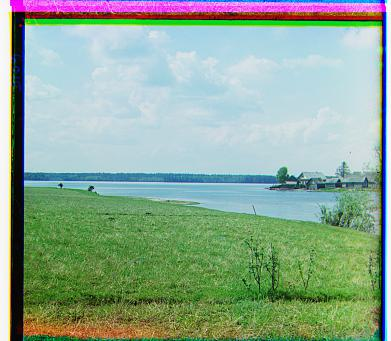

CS 180 Project 1: Colorizing the Prokudin-Gorskii Collection
Jillian Goldberg (SID: 3035565792)
Overview
The goal of this project is to use image processing techniques to produce a color image from the Prokudin-Gorskii Collection. To do so, we extracted 3 color channel images and aligned them together to form a single image.
My approach was the following:
- Load in the images and split into blue, green, and red.
- Crop borders off the images to ensure easier alignment.
- Research the difference between SSD and NCC algorithms, which calculates the difference in images. This is useful when assessing errors between alignment.
- Utilize blue as an anchor, testing the best displacement through iteration for green and red.
- Finally, stacking the 3 images on top of each other to make a final image.
One additional challenging piece of this project was the .tif images, since they were much larger and thus needed a better way to be processed.
I looked into the pyramid algorithm, which allows for descaling of images in order to align more efficiently.
Challenge
The one image I was not able to properly align was emir.tif, due to the complexity of
detail. I tried modifying the algorithm I was using for pyramid, and tried decreasing and increasing the depth of the pyramid and the offsets.
I eventually realized from an Ed Post that the 3 images do not actually have the same brightness values (they are different color channels),
making it much more difficult to align.
Unfortunately, I ran out of time and was not able to finish debugging this issue. All 13 other photos (93%) are properly aligned!
Results
[.jpg]
monastery.jpg
green shift: [-3 2]
red shift: [3 2]

tobolsk.jpg
green shift: [3 3]
red shift: [6 3]

cathedral.jpg
green shift: [5 2]
red shift: [12 3]

[.tif]
church.tif
green shift: [25 4]
red shift: [58 -4]

melons.tif
green shift: [7 1]
red shift: [15 2]

onion_church.tif
green shift: [6 3]
red shift: [12 5]

icon.tif
green shift: [41 17]
red shift: [90 23]
harvesters.tif
green shift: [60 17]
red shift: [124 14]

sculpture.tif
green shift: [ 33 -11]
red shift: [140 -27]

lady.tif
green shift: [52 8]
red shift: [112 12]
emir.tif
(errored)
green shift: [52 8]
red shift: [112 12]
[jg_******.jpg]
Self-selected photos from the collection.
jg_prison.jpg
green shift: [2 -1]
red shift: [7 -2]
jg_field.jpg
green shift: [7 1]
red shift: [15 2]
jg_lake.jpg
green shift: [6 3]
red shift: [12 5]
